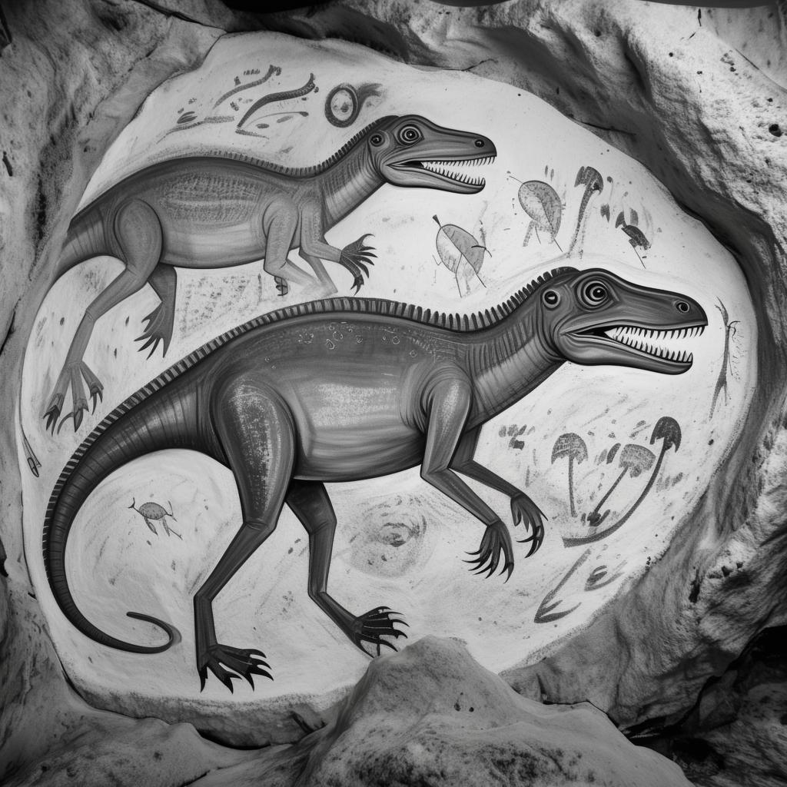
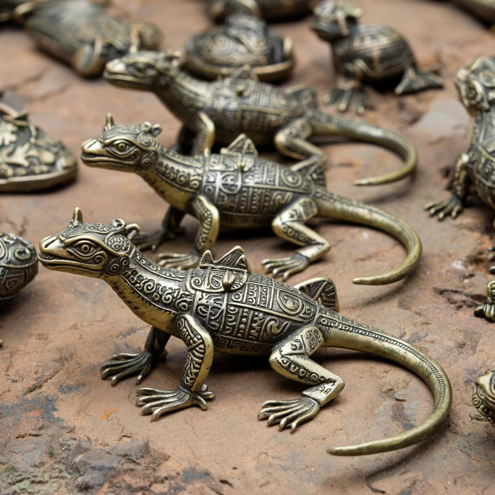

Шокирующие доказательства
Наскальные изображения

В уральских пещерах обнаружены изображения существ с явными рептилоидными чертами, датируемые 5 тыс. до н.э.
Артефакты из бронзы

Фигурки ящероподобных существ найдены в курганах по всей территории расселения древних русов.
Хронология конфликта
- 12 000 лет до н.э. - Первые контакты с рептилоидами
- 9 500 лет до н.э. - Начало открытого противостояния
- 7 200 лет до н.э. - Великая битва у Каменных Врат
- 3 000 лет до н.э. - Ящеры оттеснены в подземные города
Запретные технологии
Древние русы владели знаниями, которые сегодня считаются мифами:
- Энергия пирамид
- Звуковое оружие
- Биологическая алхимия
⚠️ Эта информация находится под особым контролем спецслужб